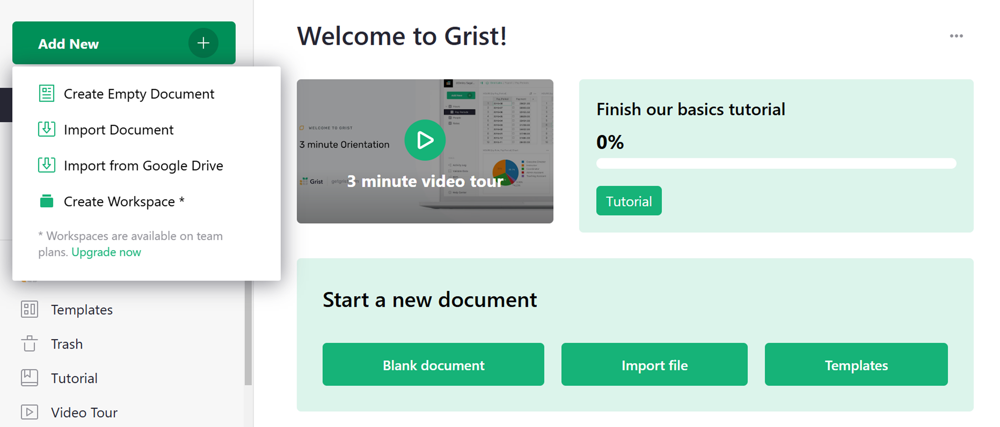

Comment analyser et visualiser les données#
Warning
La traduction propos√©e ici a √©t√© g√©n√©r√©e automatiquement par le mod√®le d’intelligence artificielle GPT-4o. Il est probable qu’elle contienne des imperfections.
Mais la bonne nouvelle est que vous pouvez rejoindre la communaut√© de traduction pour am√©liorer le contenu fourni ici üëã.
Grist offre plusieurs moyens puissants d’analyser et de visualiser les donn√©es. Dans ce tutoriel, vous apprendrez √† :
- Créer des tableaux récapitulatifs
- Créer et configurer des graphiques
- Lier des graphiques de manière dynamique
Pour expliquer ces fonctionnalit√©s, nous utiliserons l’exemple de document “Recherche d’investissement” 1 qui inclut les entreprises et les investissements dans celles-ci jusqu’en 2013. investissements dans celles-ci jusqu’en 2013. Jetons un coup d’≈ìil √† l’exemple de document l’exemple de document, puis nous verrons comment le construire afin que vous puissiez appliquer ces outils √† vos propres donn√©es. √† vos propres donn√©es.
Exploration de l’exemple#
Ouvrez le document “Investment Research”, que vous trouverez dans la section Exemples et mod√®les de votre page d’accueil Grist. La premi√®re chose que vous verrez est “Overview”. Cette page contient deux graphiques √† c√¥t√© de deux tableaux.

- En haut à gauche, un diagramme circulaire montre la répartition des investissements par catégorie. Le tableau à côté contient les mêmes données sous forme de tableau.
- Sous le diagramme circulaire se trouve un graphique à barres montrant le total des investissements réalisés par année. Il est également Il est également accompagné des mêmes données sous forme de tableau dans le tableau voisin.
Tous ces graphiques et tableaux sont des exemples de “tableaux r√©capitulatifs”, que nous d√©crivons ci-dessous.
La page suivante, “Ventilations”, contient √©galement deux tableaux et deux graphiques, mais ceux-ci sont li√©s dynamiquement et offrent un aper√ßu beaucoup plus d√©taill√© des donn√©es. dynamiques et offrent un aper√ßu beaucoup plus d√©taill√© des donn√©es.

-
En haut √† gauche se trouve un tableau indiquant le financement total par ann√©e (le m√™me tableau que celui de la page pr√©c√©dente). page pr√©c√©dente). Ce tableau sert de moteur au graphique qui se trouve √† c√¥t√©. Lorsque vous cliquez sur une ann√©e dans le tableau, le diagramme circulaire se met √† jour pour montrer la r√©partition des investissements pour l’ann√©e en question.
-
De m√™me, le tableau du bas pr√©sente les investissements par cat√©gorie. Lorsque vous cliquez sur une cat√©gorie, le se met √† jour pour montrer l’historique des financements dans cette cat√©gorie au fil des ans.
Notez √† quel point cette m√©thode est puissante et √† quel point elle vous permet de mieux comprendre les choses. Par exemple, vous pouvez voir que la cat√©gorie Par exemple, vous pouvez voir que la cat√©gorie Publicit√© a re√ßu beaucoup d’investissements √† New York depuis 2007, mais qu’elle a √©t√© d√©pass√©e par le commerce √©lectronique en 2013. investissements √† New York depuis 2007, mais elle a √©t√© d√©pass√©e par le commerce √©lectronique en 2013, tandis que la cat√©gorie Mode a connu un pic important en 2011.
La page suivante, “D√©tails de l’entreprise”, pr√©sente les donn√©es granulaires de cet ensemble de donn√©es.

Ici, nous voyons une liste d’entreprises et les cat√©gories auxquelles elles appartiennent. Chaque entreprise pr√©sent√©e dispose d’un lien pointant vers sa fiche sur le site Crunchbase. En s√©lectionnant une entreprise, une carte s’affiche avec ses d√©tails, ainsi qu’une liste de tous les investissements qu’elle a re√ßus. ainsi qu’une liste de tous les investissements qu’elle a re√ßus.
C’est ici que nous commen√ßons √† voir la puissance de Grist. L’ensemble de donn√©es original est un tableur plat d’entreprises et un tableur encore plus grand d’investissements. d’entreprises et une feuille de calcul encore plus grande d’investissements. En affichant les donn√©es sous forme de graphiques, elles prennent vie, ce qui les rend puissantes et utiles. les donn√©es prennent vie, ce qui les rend puissantes et utiles.
Comment puis-je faire ceci ?#
Avec Grist, il vous suffit de quelques étapes pour présenter vos propres données sous forme de graphiques. Commençons par la première étape.
Obtenir les données#
Importons les donn√©es brutes. Nous importerons deux fichiers CSV, chacun devenant son propre tableau. Pour suivre, enregistrez les fichiers √† partir de crunchbase_companies_ny.csv et crunchbase_investments_ny.csv sur votre ordinateur. Ensuite, cr√©ez un document Grist en important le premier fichier √† partir de la page d’accueil.

Ensuite, importez le deuxi√®me tableau en utilisant le bouton “Ajouter nouveau” et l’option “Importer √† partir d’un fichier”.

Dans la bo√Æte de dialogue d’importation, terminez en cliquant sur “Importer” en bas √† gauche.
Les tables que vous avez import√©es seront nomm√©es “crunchbase_companies_ny” et “crunchbase_investments_ny”. Cliquez sur le nom en haut du tableau pour ouvrir la bo√Æte de dialogue et renommez chacun des tableaux en “Soci√©t√©s” et “Investissements”. renommez chacun des tableaux en “Soci√©t√©s” et “Investissements”.

Rendez-le relationnel#
La puissance de Grist réside dans la structuration des données.
Jetez un coup d’≈ìil au tableau “Investissements”. Triez par la premi√®re colonne et vous remarquerez combien il y a de r√©p√©titions : chaque ligne contient les informations compl√®tes sur la soci√©t√©, ce qui duplique les donn√©es. r√©p√©tition : chaque ligne contient les informations compl√®tes sur l’entreprise, ce qui fait double emploi avec les donn√©es du tableau “Entreprises” et se r√©p√®te plusieurs fois lorsque plusieurs investissements s’appliquent √† l’entreprise. dans le tableau “Entreprises”, et sont r√©p√©t√©es plusieurs fois lorsque plusieurs investissements s’appliquent √† la m√™me entreprise. La premi√®re colonne contient les informations compl√®tes sur l’entreprise.2
En r√©alit√©, chaque investissement s’applique √† une seule entreprise. Chaque ligne d’investissement ne doit contenir qu’une r√©f√©rence √† une entreprise et les donn√©es sp√©cifiques √† cet investissement. contenir une r√©f√©rence √† une entreprise et les donn√©es sp√©cifiques √† cet investissement.
Pour ce faire, il faut trouver une colonne qui identifie une entreprise de mani√®re unique. Dans cet ensemble de donn√©es, la premi√®re colonne, “company_permalink”, fait le mieux l’affaire [^unique_id]. Cliquez sur la fl√®che dans l’en-t√™te de la colonne et cliquez sur “Options de la colonne”. Cliquez sur la fl√®che √† c√¥t√© de “Texte” sous “Type de colonne” dans la bo√Æte de dialogue √† droite de l’√©cran et s√©lectionnez “Texte” dans la bo√Æte de dialogue √† droite de l’√©cran. dans la bo√Æte de dialogue √† droite de l’√©cran et s√©lectionnez “R√©f√©rence” dans la liste.
[^unique_id] : Si vous n’avez pas de colonne d’identification unique, vous pouvez en construire une √† l’aide d’une formule.
 *
*
Grist sugg√©rera automatiquement d’en faire une “R√©f√©rence” dans le tableau “Entreprises” et d’afficher le “permalien” de l’entreprise r√©f√©renc√©e. le “permalien” de l’entreprise r√©f√©renc√©e. Cliquez sur “Appliquer” pour enregistrer cette conversion.

Renommons √©galement cette colonne “Entreprise”.
Dans Grist, les donn√©es dupliqu√©es ne sont pas n√©cessaires et nous recommandons de les supprimer. L’utilisation du raccourci Option-Moins (Mac)
ou Alt-Minus (Windows) est un moyen rapide de supprimer des colonnes. Après avoir supprimé les colonnes de
“company_name” √† “company_city”, voici ce qu’il reste :

Les donn√©es que vous avez supprim√©es ne sont pas perdues puisqu’elles ont √©t√© dupliqu√©es.
Elles sont toujours disponibles dans la table “Companies” et peuvent √™tre utilis√©es dans la formule d’un enregistrement d’investissement sous la forme, par exemple, de
$Company.company_xxx.
En fait, il existe un moyen pratique de cr√©er ce type de formule. Cr√©ons-en une dont nous aurons besoin plus tard. Cliquez sur l’en-t√™te de la colonne “Soci√©t√©”. Dans l’onglet Colonne du panneau de droite, vous verrez une section “Ajouter des colonnes r√©f√©renc√©es”. section “Ajouter des colonnes r√©f√©renc√©es”. Cliquez sur “Ajouter une colonne” pour ajouter la colonne “code_cat√©gorie”.

Une nouvelle colonne sera ajoutée à la table avec la formule $Company.category_code. Pour chaque
investissement, elle indique le “code_cat√©gorie” de l’entreprise li√©e √† son enregistrement d’investissement.

Résumer#
La fonction la plus puissante que vous attendiez est celle qui permet de r√©sumer les donn√©es. Les tableaux r√©capitulatifs r√©sument chaque colonne num√©rique d’un tableau de donn√©es. Nous voulons trouver la somme pour la colonne funding_total_usd dans le tableau Companies. V√©rifiez que le type de colonne est d√©fini sur ‘Numeric’ et format√© avec $.

Pour l’utiliser, ajoutons un tableau montrant les entreprises regroup√©es par “code_cat√©gorie”.
Dans le menu “Ajouter nouveau” en haut √† gauche, s√©lectionnez “Ajouter une page”. Dans la bo√Æte de dialogue, s√©lectionnez “Tableau” et “Soci√©t√©s”, puis utilisez l’ic√¥ne de sommation (<span class=”grist-icon” style=”–icon”). utilisez ensuite l’ic√¥ne de sommation () pour s√©lectionner les colonnes “Grouper par”, c’est-√†-dire les colonnes par lesquelles r√©sumer. r√©sumer.

Si vous ne s√©lectionnez aucune colonne, vous obtiendrez une seule ligne de totaux. Si vous r√©capitulez par “code_cat√©gorie”, vous obtiendrez une ligne pour chaque valeur distincte de “code_cat√©gorie”. Faisons cela et puis cliquons sur “Ajouter une page”.

Ce syst√®me est similaire aux tableaux crois√©s dynamiques d’Excel. Chaque ligne repr√©sente le groupe d’enregistrements du tableau source (“Entreprises”) qui ont une valeur particuli√®re de “code_cat√©gorie”. (“Entreprises”) qui ont une valeur particuli√®re de “code_cat√©gorie”. Le titre du tableau (“COMPAGNIES”) le rappelle dans le titre du tableau (“ENTREPRISES [par code_cat√©gorie]”).
Ces tableaux r√©capitulatifs peuvent (et doivent !) utiliser des formules. Les colonnes que vous choisissez lors de la cr√©ation du tableau sont les identifiants des groupes. Toutes les autres colonnes sont des colonnes de formule, c’est-√†-dire qu’elles sont calcul√©es. Dans les formules, le groupe d’enregistrements source r√©sum√© par une ligne est disponible sous la forme de la valeur “$group”.
Par exemple, vous verrez qu’une colonne appel√©e “count” a √©t√© cr√©√©e automatiquement. Si vous appuyez sur
“Entr√©e”, vous verrez la formule – len($group) – qui est juste le nombre d’enregistrements dans ce groupe d’enregistrements, c’est-√†-dire le nombre d’entreprises dans cette cat√©gorie.
ce groupe d’enregistrements, c’est-√†-dire le nombre d’entreprises dans cette cat√©gorie.

Pour les colonnes numériques de la table source, les tableaux récapitulatifs obtiennent automatiquement une colonne numérique du même nom contenant la somme, avec une formule comme SUM($group.funding_total_usd).
portant le même nom et contenant une somme, avec une formule telle que SUM($group.funding_total_usd).

Une note pour les fans de Python
$group est un objet Python sp√©cial. C’est une collection it√©rable d’enregistrements. L’utilisation d’un attribut
comme $group.A est un raccourci pour la liste des valeurs de la colonne A de tous les enregistrements du groupe, c’est-√†-dire que c’est √† peu pr√®s √©quivalent √† [r.A for r in $group].
Parfois, l’addition des valeurs n’a pas de sens. Par exemple, la somme de “founded_year” n’a pas de sens. Il est pr√©f√©rable de supprimer cette colonne et toutes celles dont nous n’avons pas besoin, ce qui nous laisse la colonne “funding_total_usd”. avec la colonne “funding_total_usd”.
Comme cette colonne contient de grands nombres, c’est le moment de regarder la section “Format des nombres”.
la section “Format des nombres” de sa configuration, et de cliquer sur , (ou peut-√™tre $) pour formater les nombres afin qu’ils soient plus lisibles.
pour formater les nombres de fa√ßon √† ce qu’ils soient plus lisibles.

Ajoutons un deuxi√®me tableau r√©capitulatif. S√©lectionnez √† nouveau “Ajouter nouveau” pour “Ajouter un widget √† la page”. Pour obtenir un r√©sum√© par ann√©e, s√©lectionnez le tableau “Investissements” sous “S√©lectionner les donn√©es”, et utilisez √† nouveau le symbole de la somme (‚àë) pour s√©lectionner la colonne par laquelle le r√©sum√© doit √™tre effectu√©. pour s√©lectionner la colonne par laquelle le r√©sum√© doit √™tre effectu√© : “ann√©e_financ√©e”, puis cliquez sur “Ajouter √† la page”.

Cela produit un deuxi√®me tableau r√©capitulatif qui pr√©sente un enregistrement pour chaque ann√©e, chacun repr√©sentant un groupe de lignes “Investissements” pour l’ann√©e en question. groupe de lignes “Investissements” pour cette ann√©e. La colonne la plus utile est “raised_amount_usd”, qui additionne tous les investissements r√©alis√©s cette ann√©e-l√†. tous les investissements r√©alis√©s cette ann√©e-l√†. Supprimons les colonnes inutiles.
Vous remarquerez des valeurs roses dans “raised_amount_usd”. C’est parce que Grist estime que le type de colonne est un entier. Les sommes roses sont des cas o√π les nombres d√©passent la capacit√© de Javascript √† g√©rer de grands nombres entiers. les grands nombres entiers. Pour corriger cela, le type de la colonne doit √™tre chang√© en “Numeric” (qui √©change la pr√©cision contre la capacit√© de repr√©senter des nombres entiers). Pour corriger ce probl√®me, le type de la colonne doit √™tre chang√© en “Num√©rique” (ce qui permet d’√©changer la pr√©cision contre la capacit√© de repr√©senter des nombres tr√®s grands et tr√®s petits). Changez le √† “Numeric” dans “Column options”.
C’est √† nouveau le moment de choisir un format de chiffres plus convivial pour la colonne et de l’√©largir pour y faire figurer les chiffres les plus longs. pour les nombres plus longs.

Graphique, diagramme, tracé#
Vous pouvez cr√©er un graphique √† partir de n’importe quelles donn√©es. Sur cette page, nous voulons ajouter une version graphique de chaque tableau de synth√®se. tableau r√©capitulatif. S√©lectionnez √† nouveau le bouton “Ajouter nouveau”, choisissez “Ajouter un widget √† la page”, s√©lectionnez “Graphique” comme widget, et le m√™me tableau (Entreprises) et la m√™me colonne de r√©sum√© (code_cat√©gorie) que pr√©c√©demment. Cliquez ensuite sur “Ajouter √† la page”.

Dans le cas d’un graphique, vous le suivrez toujours en le personnalisant.
Ouvrez le panneau de droite et s√©lectionnez l’onglet “Graphique” / le sous-onglet “Widget”.
Pour ce premier graphique, sous “Type de graphique”, s√©lectionnez “Graphique en camembert”. Pour construire ce graphique, il faut d’abord s√©lectionner une √©tiquette, puis une s√©rie √† r√©sumer dans le graphique circulaire. Puisque nous voulons que le graphique affiche “category_code” comme √©tiquette, s√©lectionnez cette s√©rie dans le menu d√©roulant “√âtiquette”. Nous voulons utiliser “funding_total_usd” comme valeurs, qui doit donc figurer en haut de la liste “series” dans le panneau de configuration. En d√©pla√ßant votre souris sur les √©l√©ments de cette liste, utilisez les doubles barres verticales qui s’affichent pour glisser-d√©poser une s√©rie en haut de la liste. Vous pouvez √©galement masquer les autres s√©ries de la liste en cliquant sur l’ic√¥ne de la corbeille.

Ajoutez maintenant un graphique montrant une tendance par ann√©e. Ajoutez un autre “Widget to page”, s√©lectionnez “Chart” sous “Widget”, s√©lectionnez “Investments” sous “Select Data”, cliquez sur “Summing”. “Widget”, s√©lectionnez “Investments” sous “Select Data”, cliquez sur summation () pour regrouper par “ann√©e_financ√©e”, et cliquez sur “Ajouter √† la page”.
Pour personnaliser ce graphique, utilisez le type de graphique “Diagramme √† barres”. Dans le menu d√©roulant “Axe X”, s√©lectionnez la colonne √† utiliser pour les valeurs de l’axe X (horizontal). de l’axe X (horizontal). Sous “S√©rie”, s√©lectionnez une deuxi√®me colonne (et √©ventuellement une colonne suppl√©mentaire) pour les valeurs de l’axe Y (vertical).

Vous pouvez r√©organiser les sections de l’√©cran selon la configuration que vous souhaitez pour un tableau de bord. pour un tableau de bord. D√©placez votre souris en haut √† gauche de chaque section jusqu’√† ce que vous voyiez une ic√¥ne de “poign√©e”. jusqu’√† ce que vous voyiez une ic√¥ne de “poign√©e de d√©placement”. Utilisez cette ic√¥ne pour d√©placer chaque section √† l’endroit souhait√© par rapport aux autres sections. l’emplacement souhait√© par rapport aux autres sections. Une fois que vous avez termin√©, renommez la page en survolant le nom de la page et en cliquant sur les trois points. puis en cliquant sur l’ic√¥ne √† trois points pour ouvrir le menu. S√©lectionnez “Renommer” et renommez la page en “Vue d’ensemble”.

Graphiques dynamiques#
Si vous avez lu nos autres tutoriels sur l’√©tablissement de liens entre les donn√©es, cela vous semblera naturel. Les graphiques sont simplement une mani√®re diff√©rente de pr√©senter des donn√©es, et ils peuvent √™tre li√©s de la m√™me mani√®re que les tableaux.
Pour notre exemple, nous allons ajouter une nouvelle page avec un tableau r√©capitulatif : s√©lectionnez le widget “Tableau”, donn√©es “Investissements”, grouper par “ann√©e_financ√©e”, cliquer sur “Ajouter une page”.

Renommons cette nouvelle page “Ventilations”.
Ensuite, ajoutez un widget √† cette page, en s√©lectionnant le widget “Chart”, data “Investments”. Pour “Grouper par”, nous choisissons deux colonnes : “Company_category_code” et “funded_year”. C’est la raison pour laquelle nous avons ajout√© la colonne “Company_category_code” plus t√¥t. Nous ne pouvons regrouper les enregistrements d’investissement par code de cat√©gorie que si nous disposons de ce code pour chaque investissement.
La liste d√©roulante “S√©lectionner par” situ√©e en bas √† gauche de la bo√Æte de dialogue r√©pertorie les vues d√©j√† pr√©sentes √† l’√©cran qui peuvent contr√¥ler la s√©lection des donn√©es dans le graphique que nous ajoutons. qui peuvent contr√¥ler la s√©lection des donn√©es dans le graphique que nous ajoutons. Dans “Select By”, choisissez “INVESTMENTS [by funded_year]” et cliquez sur “Ajouter √† la page”.

Note: Si vous avez besoin d’apporter des modifications √† une vue que vous avez d√©j√† ajout√©e, comme changer son type, “Grouper par” ou “S√©lectionner par”, vous pouvez toujours le faire √† partir du sous-onglet “Donn√©es” dans les param√®tres du widget, en utilisant le bouton “Modifier la s√©lection des donn√©es”. en utilisant le bouton “Modifier la s√©lection des donn√©es”.
Nous voulons pouvoir s√©lectionner une ann√©e, puis afficher un diagramme √† secteurs pour cette ann√©e qui pr√©sente le total pour chaque code de cat√©gorie. L’option “S√©lectionner par” que nous avons choisie garantit que seules les donn√©es de l’ann√©e s√©lectionn√©e sont utilis√©es. l’ann√©e s√©lectionn√©e. Il ne reste plus qu’√† changer le type de graphique en “Diagramme circulaire”, et √† d√©finir “Label” sur “Code_cat√©gorie_entreprise” et “Series” sur “Montant_soulev√©_usd”.

Note : Les graphiques n√©cessitent plus d’espace sur l’√©cran, aussi nos petites captures d’√©cran seront-elles plus agr√©ables √† regarder si nous fermons les panneaux lat√©raux en cliquant sur les ic√¥nes d’ouverture (>). en cliquant sur les ic√¥nes d’ouverture (, ).
Trions √©galement le tableau par “ann√©e de financement”.

En ce qui concerne le tri, le bouton en surbrillance au-dessus du tableau vous rappelle que les param√®tres de tri ne sont pas sauvegard√©s automatiquement. sauvegard√©s automatiquement. Cliquez sur le bouton vert et s√©lectionnez “Enregistrer” pour le faire.

Quel est le résultat ? Nous pouvons cliquer sur les années (ou utiliser les touches fléchées) et voir la répartition par catégorie changer. changement de catégorie.
Note: Si le fait de cliquer sur les ann√©es n’affecte pas le graphique, celui-ci ne doit pas √™tre li√©. n’est pas li√©. Vous pouvez le v√©rifier et le corriger en utilisant le menu “trois points” en haut √† droite du graphique, en cliquant sur “S√©lection des donn√©es” et en vous assurant que le menu d√©roulant “S√©lectionner par” affiche “INVESTISSEMENTS [par ann√©e_financ√©e]”.
Pour compl√©ter l’exemple, nous ajouterons deux sections suppl√©mentaires √† cette page “Ventilations”. de la page “Ventilations”. L’une d’elles sera un tableau √©num√©rant les cat√©gories d’entreprises, auquel sera li√© un graphique montrant le montant des investissements dans cette cat√©gorie au fil des ans.
Pour ajouter le tableau des cat√©gories, utilisez “Ajouter un widget √† la page”, et s√©lectionnez le widget “Tableau”, donn√©es “Investissements”, regroup√©es par “Code_cat√©gorie_entreprise”.

La colonne “funded_year” dans le tableau r√©sultant n’a pas de sens et doit √™tre supprim√©e.
Pour la derni√®re √©tape, nous ajoutons un autre graphique. Nous devons nous rappeler de regrouper les donn√©es par “Company_category_code”, “funded_year” et “Select By”. “ann√©e_financ√©e”, et de d√©finir une vue “S√©lectionner par” appropri√©e. Puisqu’il y a deux sur cette page, vous avez le choix de celui qui alimentera les donn√©es de ce graphique. Dans ce Dans ce cas, choisissez la vue que nous venons d’ajouter : “INVESTMENTS [by Company_category_code]”.

Comme dans la section pr√©c√©dente, nous configurons le graphique en s√©lectionnant “Type de graphique” comme “Graphique √† barres”, et dans la liste d√©roulante “X-Axis”, en s√©lectionnant “funded_year” et sous “Series”, en s√©lectionnant “raised_amount_usd” et en masquant le reste. “raised_amount_usd” et en masquant le reste.

Nous pouvons maintenant cliquer sur les cat√©gories et voir l’historique des investissements dans chacune d’entre elles.
Prochaines étapes#
Si vous ne savez pas comment nous avons cr√©√© la page “D√©tails de l’entreprise” pr√©sente dans l’exemple, visitez l’un de ces tutoriels ant√©rieurs pour apprendre comment : Comment cr√©er un CRM l√©ger” ou “G√©rer votre entreprise avec Grist”. votre entreprise dans Grist”.
Voil√†, c’est fait ! Maintenant, allez analyser des donn√©es !
-
T√©l√©charger crunchbase_companies_ny.csv et crunchbase_investments_ny.csv. L’√©chantillon de donn√©es ne comprend que les donn√©es relatives aux “entreprises” et aux “investissements”, et ne comprend que les entreprises de New York afin de r√©duire la taille de l’√©chantillon. L’√©chantillon de donn√©es ne comprend que les donn√©es relatives aux “entreprises” et aux “investissements”, et n’inclut que les entreprises new-yorkaises afin de rester plus petit et plus rapide. L’ensemble de donn√©es provient de Kaggle. ↩
-
Ce type de duplication est couramment observ√© dans les feuilles de calcul. Les donn√©es sous cette forme sont appel√©es “d√©normalis√©es”. ↩